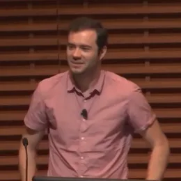

Сценарии использования базовой модели

AI Engineering
Это практическое руководство по созданию приложений на основе готовых фундаментальных моделей (foundation models). В книге объясняется, чем AI-инжиниринг отличается от традиционного ML-инжиниринга, и предлагается пошаговый фреймворк для разработки AI-продуктов — от простых методов (промпт-инжиниринг) до более сложных (RAG, дообучение, AI-агенты). Особое внимание уделяется вопросам оценки моделей (включая подход «AI-as-a-judge»), а также оптимизации задержек и стоимости при развертывании

Программа вечера
AI-приложения — не ниша, а вселенная
Приложений бесконечно много, и каждый классифицирует по-своему.
Сколько задач профессии автоматизирует AI
Вопрос не «заменит ли», а «какой процент задач».

«Профессии не исчезают — трансформируются: переводчик → AI-редактор, дизайнер → арт-директор».
Категории AI-приложений
Написание кода — самый популярный
Идеально для AI: код структурирован, результат проверяем (компилируется или нет), рынок огромен.
Заменит ли AI разработчиков?
«Не учите детей программировать — за них это сделает AI».
«Разработчики перестанут писать код руками, но профессия не исчезнет — трансформируется».

«Самый горячий новый язык программирования — это английский».
«В ближайший год почти весь код будет писать AI — под присмотром человека».
Инструменты под конкретные задачи кода
Помимо универсальных ассистентов — сотни инструментов под узкие задачи. Наведи на инструмент: подсветится вся его группа.
Генерация изображений и видео
За несколько лет — путь от «угрозы» до нормы. Наведи на инструмент — узнаешь, для чего он.
«AI-сгенерированные лица используют для фейковых аккаунтов — мы их удаляем».
«Мы отдали генерацию изображений в руки каждому».
Написание текстов
Часто, утомительно, с ошибками — идеальное применение. Исследование MIT (2023), 453 специалиста.
Поднимает дно
Слабые писатели становятся средними. Демократизация качества.
Демократизирует мусор
Контент-фермы: 400 рекламных объявлений на «мусорных» сайтах (NewsGuard, 2023).
Тексты и доверие · 2026
Образование: страх → интеграция
Впервые в истории — индивидуальный репетитор для каждого ученика.
Образование · 2026
Собеседники — новый тип отношений
От утилитарного (поддержка) до эмоционального (компаньон). Иногда с ботами проводят больше времени, чем с людьми.
Character.AI
100M+ пользователей, сессия 30+ мин.
Replika
AI-компаньон, 10M+, подписка $70/год.
NPC в играх
NVIDIA ACE, Inworld — бесконечный диалог.
AI-терапия
Woebot, Wysa — как «wellness», не «medical».
Боты-собеседники · 2026
Сбор информации — фильтр и сжатие
74% пользователей генеративного AI — для анализа и обобщения. AI не создаёт информацию, а сжимает её. Это RAG в действии.
Сбор информации · 2026
Организация данных — хаос → структура
AI превращает неструктурированное (фото, PDF, договор) в структурированное. Это фундамент для RAG и аналитики.
Организация данных · 2026
Автоматизация workflow — агенты
Все сценарии — компоненты. Агент комбинирует их в автономный процесс, а не «отвечает на вопрос».
Агенты · 2026
Не все приложения стоит создавать
Возможностей бесконечно много, но «AI-powered» — не бизнес-модель. Мост к разделу о планировании.
Уникальные данные
Реальный workflow, не игрушка
Измеримый ROI
Защита от «OpenAI добавит это в ChatGPT»